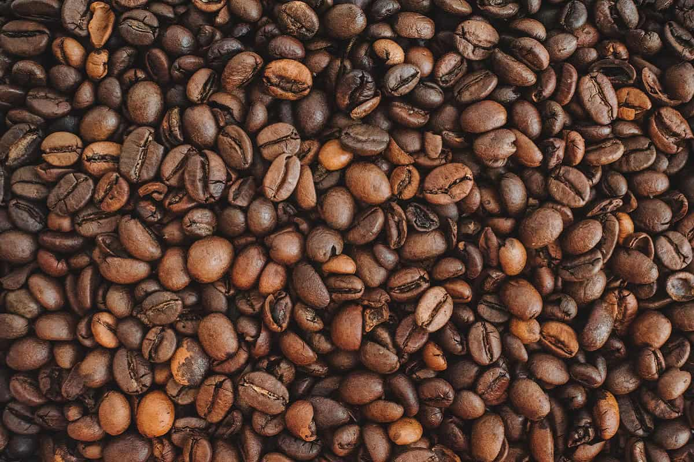
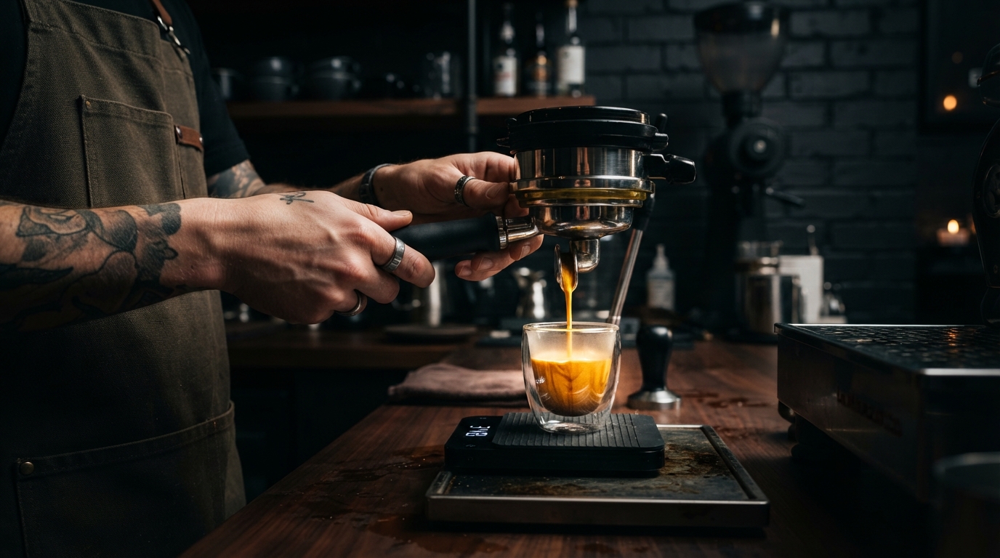

Tecnologia, café,
e desempenho num só lugar
Preparo preciso para os aficionados por tecnologia. Eleve seu ritual diário com equipamentos de alto desempenho e torras artesanais.
Encontre seu café ideal
Cada método revela um perfil diferente. Descubra qual combina com o seu estilo e ritmo.
Espresso
Intenso, encorpado e rápido — o clássico dos aficionados por tecnologia.
V60
Extração lenta e limpa, que realça notas florais e frutadas.
French Press
Corpo denso e textura marcante, direto e sem filtro de papel.
Aeropress
Rápido, versátil e portátil — perfeito para qualquer setup.
Moka
O clássico italiano de fogão, forte e aromático.
Cold Brew
Extração a frio por horas, resultado suave e naturalmente doce.
Monte seu setup
Do grão à xícara: uma composição pensada para performance e precisão em cada etapa.
 01
01
Máquina
Extração com controle de pressão e temperatura.
 02
02
Moedor
Moagem uniforme, ajuste fino para cada método.
 03
03
Acessórios
Balança, filtros e ferramentas de precisão.
 04
04
Café
Torras selecionadas para fechar o ritual.
Destaques TechCoffee
Seleção do que há de melhor no catálogo — dos equipamentos aos acessórios de precisão.
Espresso Automática
Extração precisa com controle de temperatura e pressão.
R$ 1.899,00
Moedor Elétrico
Moagem uniforme com ajuste fino para cada método.
R$ 649,00
Especial 90+
Microlote premiado, perfil frutado e floral.
R$ 79,90
Kit Premium
Equipamento profissional + kit de torras artesanais.
R$ 2.199,00
Balança Digital
Precisão de 0,1g com timer integrado.
R$ 159,00Aprenda, ajuste, aprimore
Conteúdo pensado pra quem quer ir além da xícara e dominar cada etapa do processo.

Como escolher seu café
Torra, origem e perfil sensorial: o que observar antes de comprar.
Como regular seu moedor
Ajuste fino de moagem pra cada método de preparo.
Espresso perfeito
Pressão, temperatura e tempo de extração na prática.
Guia de métodos
Espresso, V60, French Press e mais: qual escolher.
